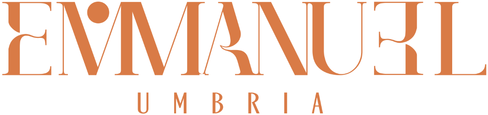
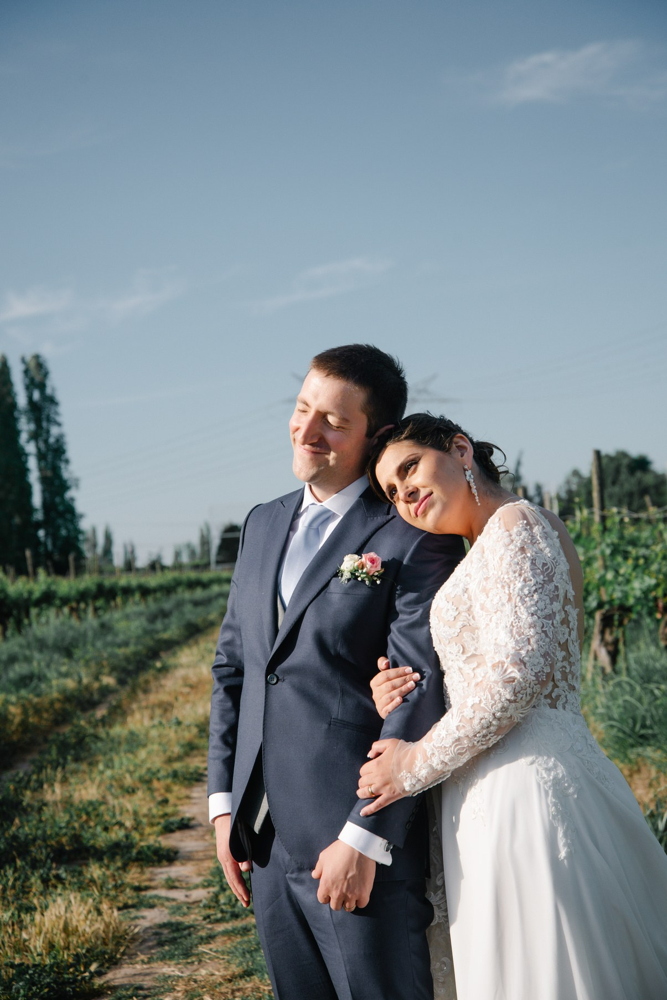
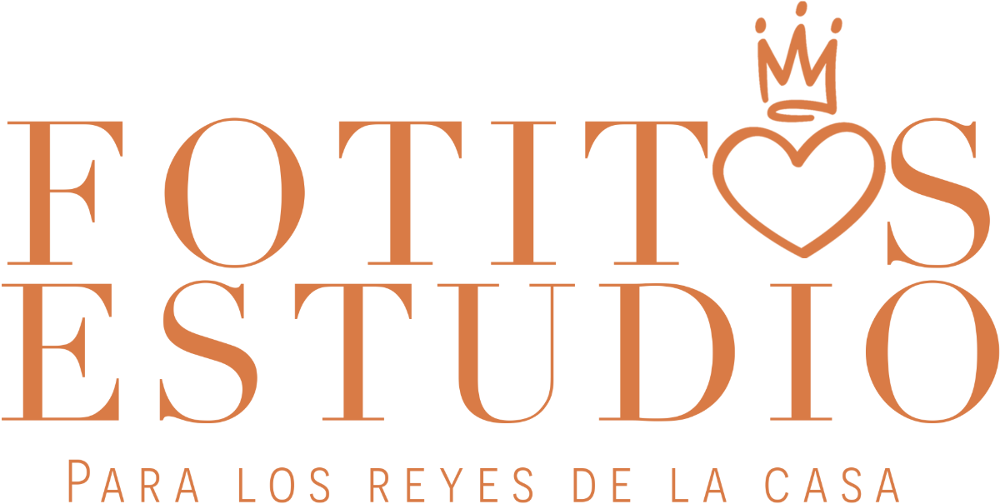
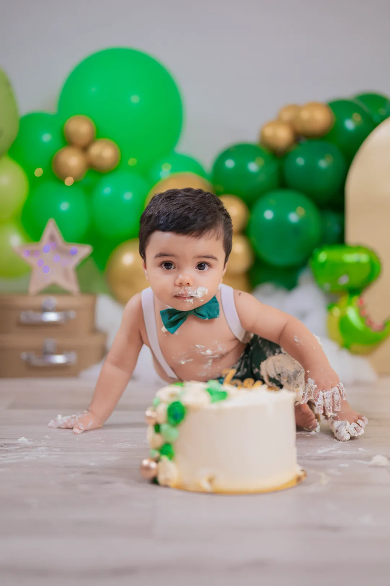
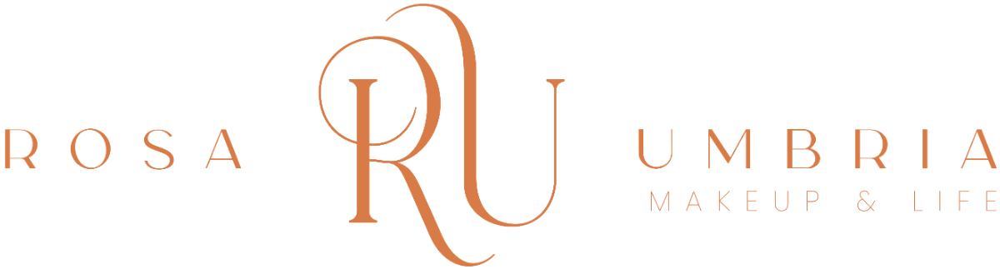
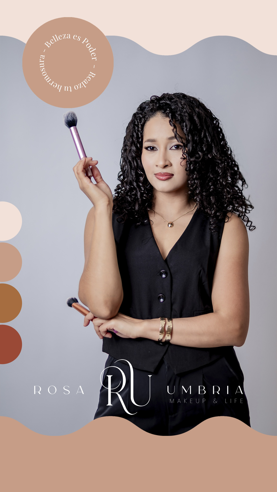
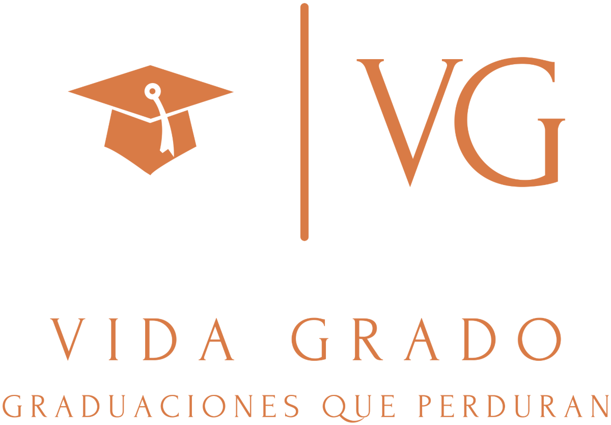

Una cámara,
cinco formas de mirar
Gírala, recórrela y descubre el universo Umbría.

El díaque dijeron sí
Emmanuel acompaña cada boda de forma personal, nunca por formulario. Una mirada sensible que guarda el detalle que nadie más vio.


La familiaen su mejor luz
Sesiones de estudio y familiares donde cada quien se ve como es. Desde el retrato simple hasta el photobook físico para guardar siempre.


Rosa firmatu mirada
Maquillaje de novia y editorial con la mano de Rosa. Esencial o Atelier, incluso para la mamá de la novia en el día más importante.


El logroque merece marco
Colegio, instituto o universidad: cubrimos la ceremonia completa con video y photobook. Vida Grado guarda el cierre de una etapa.

Tu marcaen movimiento
Producción de video, reels y fotografía para empresas y emprendimientos. La misma sensibilidad de Umbría, al servicio de tu marca.